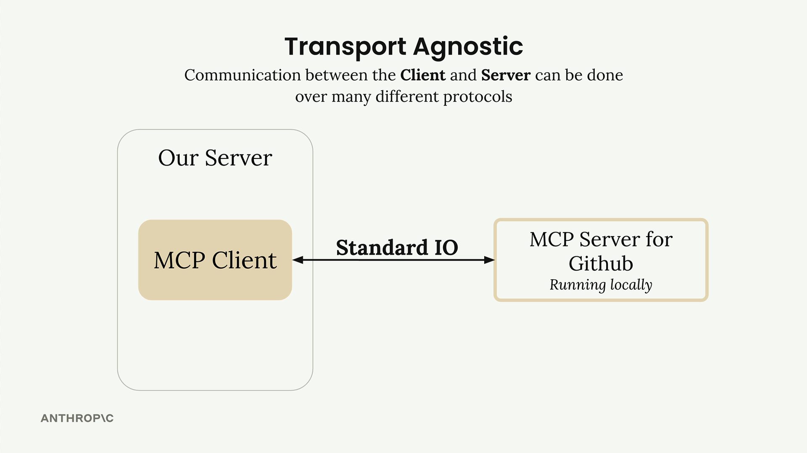
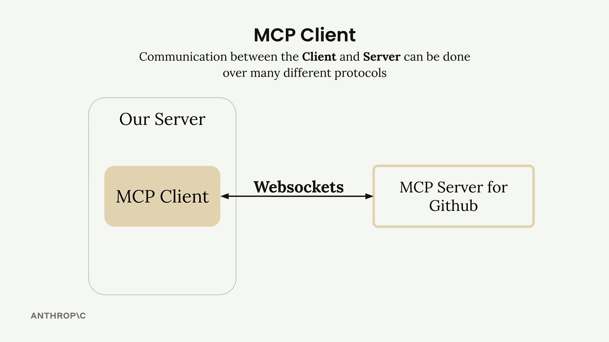
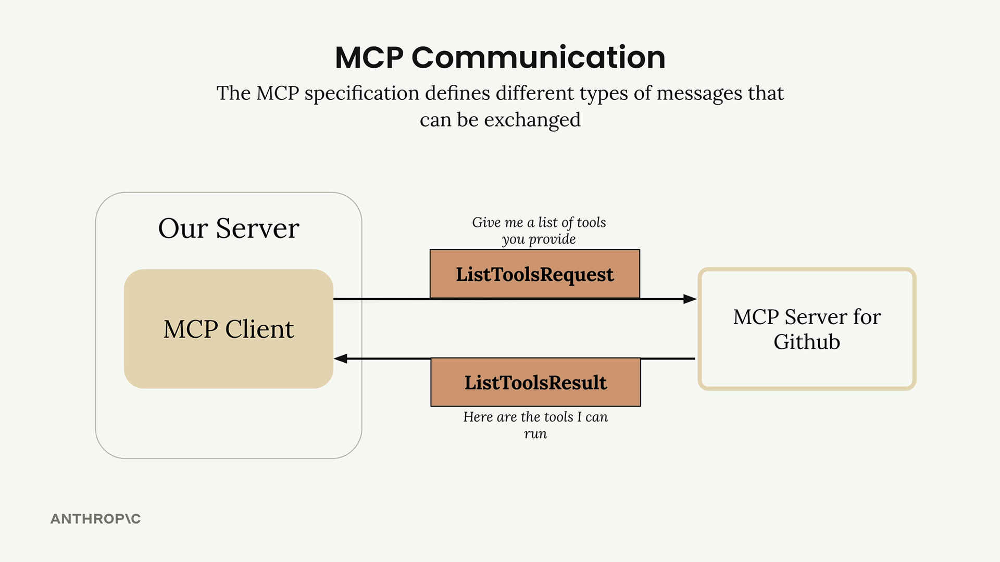
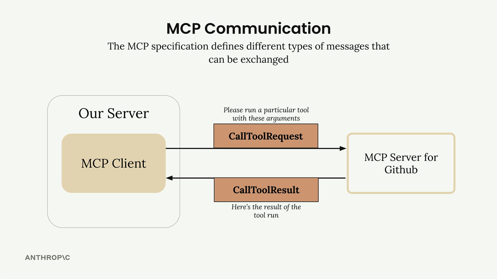
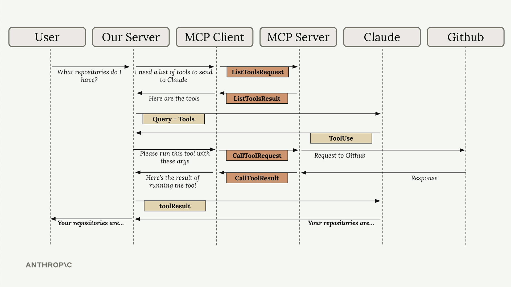

MCP-клиенты
Чему научитесь
Видео 4:56 и текст урока
К концу урока вы сможете:
- объяснить, зачем вашему приложению MCP-клиент;
- рассказать, что значит независимость MCP от транспорта, и назвать способы связи клиента с сервером;
- различать основные типы сообщений:
ListToolsRequest/ListToolsResultиCallToolRequest/CallToolResult; - пройти весь поток сообщений от вопроса пользователя до ответа Claude.
Видео и текст урока.
Смотреть урок на Skilljar MCP clients · 4:56MCP-клиент — это мост, по которому ваш сервер общается с MCP-серверами. Через него вы получаете доступ ко всем инструментам, которые предоставляет MCP-сервер: клиент берёт на себя обмен сообщениями и детали протокола, чтобы этим не пришлось заниматься вашему приложению.
Независимость от транспорта
Одно из главных достоинств MCP — независимость от транспорта (transport agnostic). За мудрёным термином стоит простая мысль: клиент и сервер могут общаться по разным протоколам — в зависимости от того, как устроена ваша система.

Чаще всего MCP-клиент и сервер работают на одной машине и общаются через стандартный ввод/вывод. Но соединить их можно и через:
- HTTP;
- WebSockets;
- другие сетевые протоколы.

Типы сообщений MCP
После подключения клиент и сервер обмениваются сообщениями определённых типов, которые задаёт спецификация MCP. Вот основные типы, с которыми вам предстоит работать:

ListToolsRequest/ListToolsResult: клиент спрашивает сервер: «Какие инструменты ты предоставляешь?» — и получает в ответ список доступных инструментов.

CallToolRequest/CallToolResult: клиент просит сервер выполнить конкретный инструмент с заданными аргументами и затем получает результат.
Как всё работает вместе
Вот полный пример того, как запрос пользователя проходит через всю систему: от вашего сервера через MCP-клиент к внешним сервисам вроде GitHub и обратно к Claude.
Допустим, пользователь спрашивает: «What repositories do I have?» («Какие у меня есть репозитории?»). Пошагово поток выглядит так:
- Вопрос пользователя: пользователь отправляет свой вопрос на ваш сервер;
- Поиск инструментов: вашему серверу нужно знать, какие инструменты доступны, чтобы передать их Claude;
- Обмен списком инструментов: ваш сервер запрашивает у MCP-клиента доступные инструменты;
- Общение по MCP: MCP-клиент отправляет MCP-серверу
ListToolsRequestи получаетListToolsResult; - Запрос к Claude: ваш сервер отправляет Claude вопрос пользователя вместе с доступными инструментами;
- Решение вызвать инструмент: Claude решает, что для ответа на вопрос ему нужно вызвать инструмент;
- Запрос на выполнение инструмента: ваш сервер просит MCP-клиента выполнить инструмент, который указал Claude;
- Вызов внешнего API: MCP-клиент отправляет MCP-серверу
CallToolRequest, и тот выполняет настоящий запрос к API GitHub; - Результаты идут обратно: GitHub отвечает данными о репозиториях, и они возвращаются через MCP-сервер в виде
CallToolResult; - Результат инструмента — к Claude: ваш сервер отправляет результаты инструмента обратно Claude;
- Итоговый ответ: Claude составляет окончательный ответ на основе данных о репозиториях;
- Пользователь получает ответ: ваш сервер передаёт ответ Claude пользователю.

Да, шагов в этом потоке много, но у каждого компонента своя чёткая роль. MCP-клиент скрывает сложность общения с сервером: вы можете сосредоточиться на логике приложения и при этом получать доступ к мощным внешним инструментам и источникам данных.
Понимать этот поток очень важно: все эти части встретятся вам, когда в следующих разделах вы будете писать собственные MCP-клиенты и серверы.
Дальше
Следующий урок — «Подготовка проекта»: познакомимся с учебным CLI-чатом, для которого мы напишем свой MCP-клиент и свой MCP-сервер.
Оригинал урока: MCP clients.